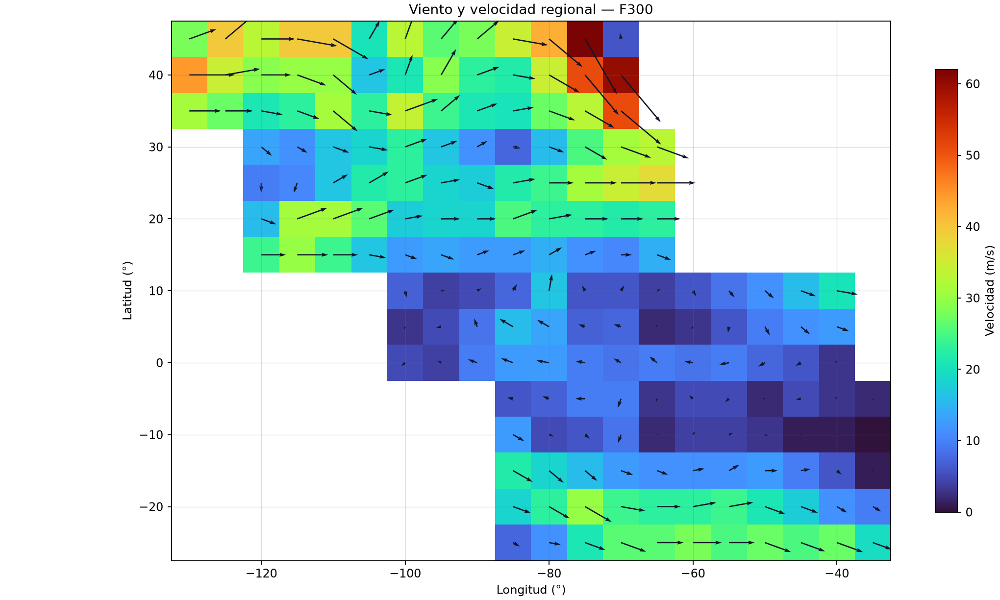
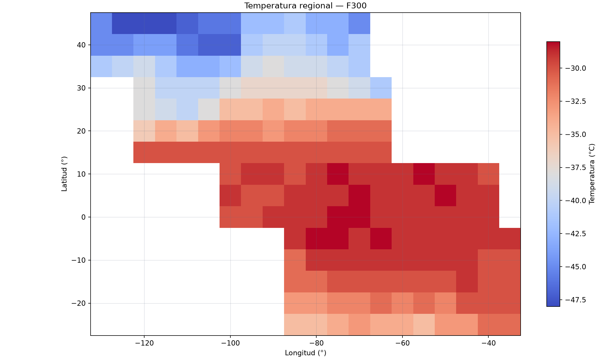
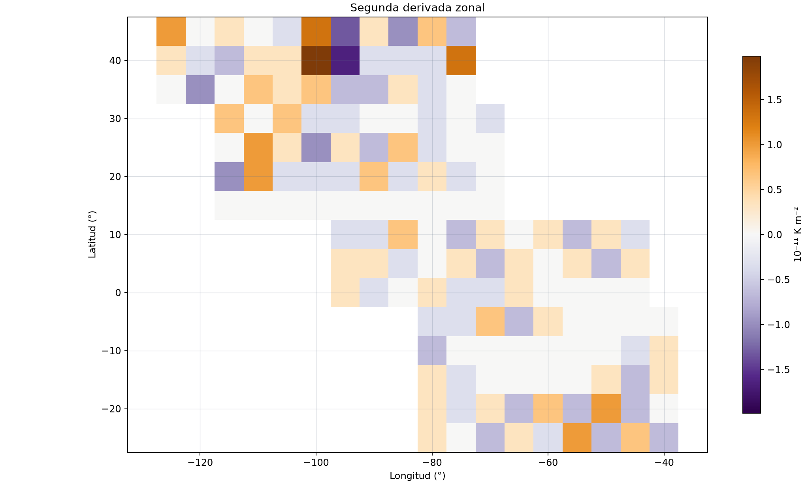
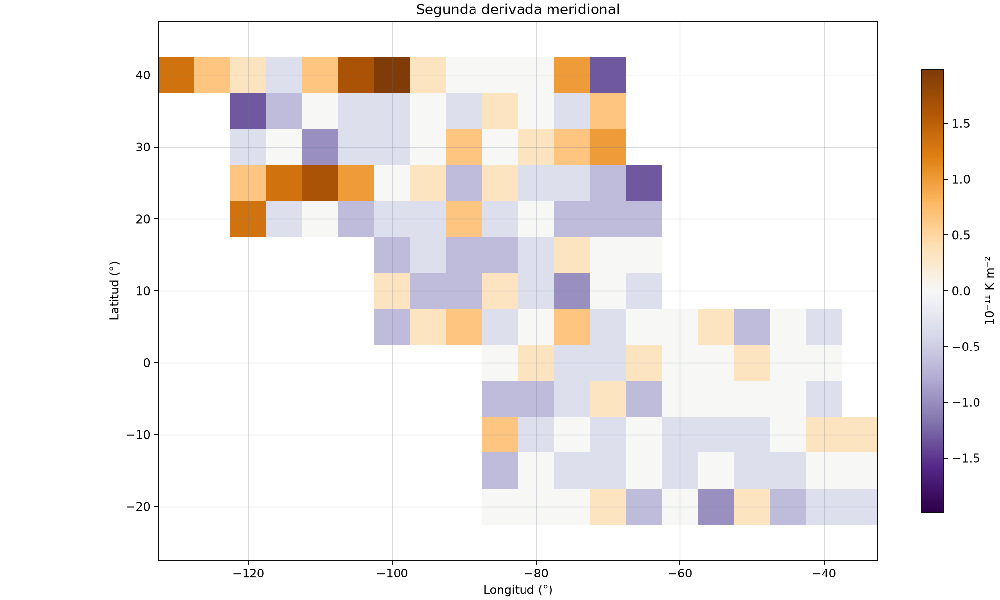
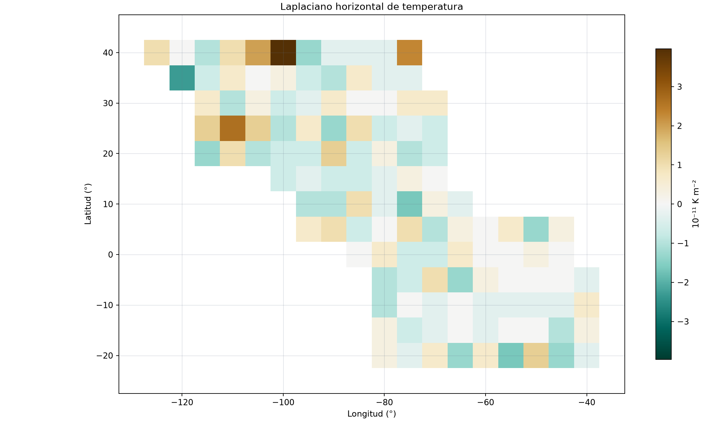
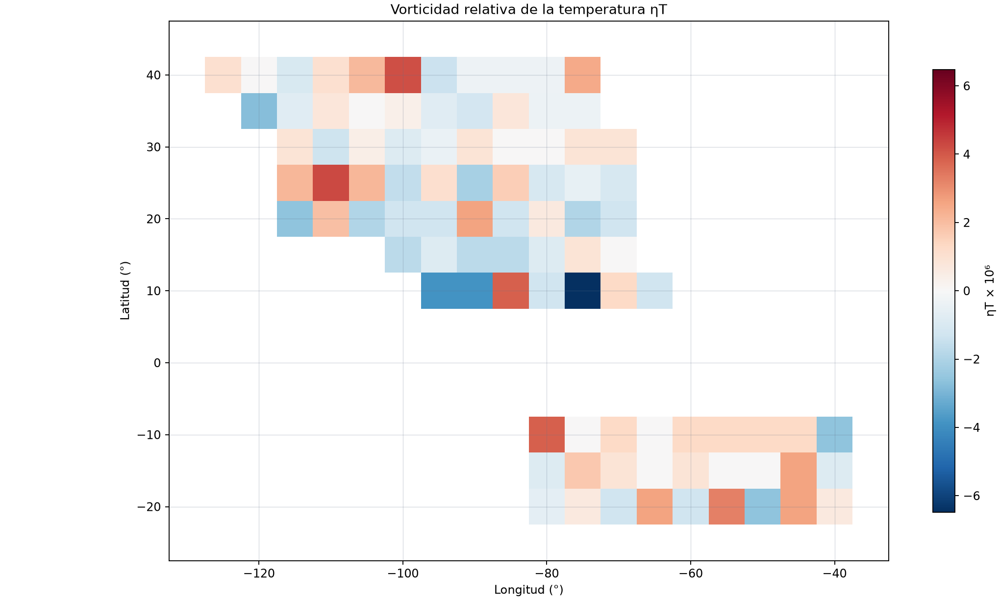
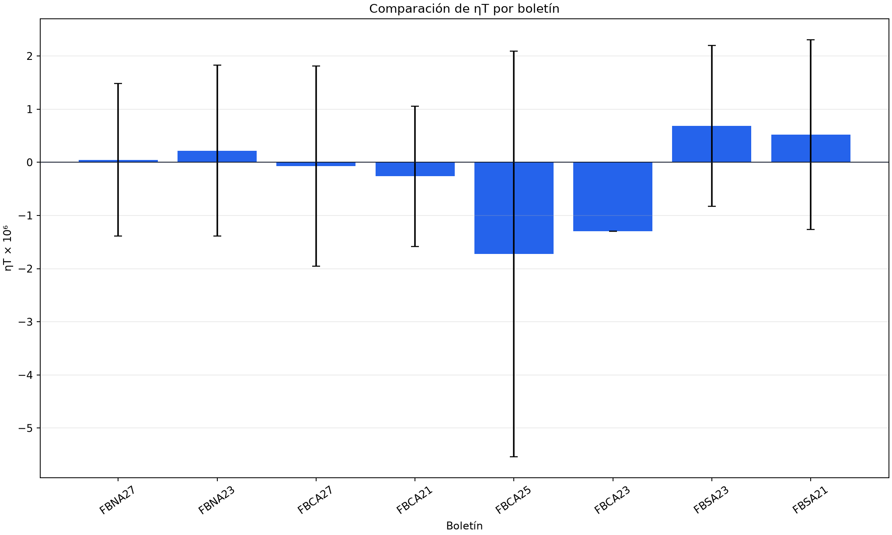

{kind=link}

Viento y velocidad
Velocidad regional con vectores de viento.
ANÁLISIS METEOROLÓGICO · F300
Resultados estáticos generados localmente. No requieren Python, servidor ni conexión a una API.
Seleccione una imagen para verla a resolución completa.

Velocidad regional con vectores de viento.

Campo térmico regional en F300.

Curvatura térmica en la dirección x.

Curvatura térmica en la dirección y.

Suma de las dos segundas derivadas.

Diagnóstico ηT; banda ecuatorial enmascarada.

Media y dispersión de ηT.
Valores de ηT expresados × 10⁶.
| Boletín | Puntos | Válidos | Media | Desv. | Mín. | Máx. |
|---|---|---|---|---|---|---|
| FBNA27 | 18 | 9 | 0.0449 | 1.4348 | -2.7456 | 2.1000 |
| FBNA23 | 21 | 12 | 0.2193 | 1.6088 | -1.4000 | 4.2000 |
| FBCA27 | 24 | 17 | -0.0726 | 1.8808 | -2.6312 | 4.2587 |
| FBCA21 | 24 | 20 | -0.2643 | 1.3166 | -2.1294 | 2.6312 |
| FBCA25 | 21 | 6 | -1.7275 | 3.8141 | -6.4780 | 3.8868 |
| FBCA23 | 18 | 1 | -1.2956 | — | -1.2956 | -1.2956 |
| FBSA23 | 25 | 12 | 0.6864 | 1.5131 | -1.3156 | 3.8868 |
| FBSA21 | 30 | 15 | 0.5220 | 1.7824 | -2.6312 | 3.2889 |
Datos F300 y diagnósticos completos para los 181 puntos.
| Latitud | Longitud | Dirección | KT | m/s | T (°C) | d²T/dx² ×10¹¹ | d²T/dy² ×10¹¹ | ∇²T ×10¹¹ | f ×10⁵ | ηT ×10⁶ |
|---|---|---|---|---|---|---|---|---|---|---|
| 45° | -130° | 250° | 56 | 28.0 | -45 | — | — | — | 10.1823 | — |
| 45° | -125° | 230° | 79 | 39.5 | -48 | 0.9917 | — | — | 10.1823 | — |
| 45° | -120° | 270° | 66 | 33.0 | -48 | 0.0000 | — | — | 10.1823 | — |
| 45° | -115° | 280° | 79 | 39.5 | -48 | 0.3306 | — | — | 10.1823 | — |
| 45° | -110° | 300° | 79 | 39.5 | -47 | 0.0000 | — | — | 10.1823 | — |
| 45° | -105° | 210° | 41 | 20.5 | -46 | -0.3306 | — | — | 10.1823 | — |
| 40° | -130° | 270° | 89 | 44.5 | -45 | — | 1.3223 | — | 9.2561 | — |
| 40° | -125° | 260° | 69 | 34.5 | -45 | 0.3306 | 0.6612 | 0.9917 | 9.2561 | 1.0500 |
| 40° | -120° | 270° | 58 | 29.0 | -44 | -0.3306 | 0.3306 | 0.0000 | 9.2561 | 0.0000 |
| 40° | -115° | 290° | 60 | 30.0 | -44 | -0.6612 | -0.3306 | -0.9917 | 9.2561 | -1.0500 |
| 40° | -110° | 310° | 60 | 30.0 | -46 | 0.3306 | 0.6612 | 0.9917 | 9.2561 | 1.0500 |
| 40° | -105° | 250° | 33 | 16.5 | -47 | 0.3306 | 1.6529 | 1.9835 | 9.2561 | 2.1000 |
| 35° | -130° | 270° | 62 | 31.0 | -41 | — | — | — | 8.2595 | — |
| 35° | -125° | 270° | 54 | 27.0 | -40 | 0.0000 | — | — | 8.2595 | — |
| 35° | -120° | 280° | 42 | 21.0 | -39 | -0.9917 | -1.3223 | -2.3140 | 8.2595 | -2.7456 |
| 35° | -115° | 290° | 46 | 23.0 | -41 | 0.0000 | -0.6612 | -0.6612 | 8.2595 | -0.7845 |
| 35° | -110° | 310° | 62 | 31.0 | -43 | 0.6612 | 0.0000 | 0.6612 | 8.2595 | 0.7845 |
| 35° | -105° | 280° | 46 | 23.0 | -43 | 0.3306 | -0.3306 | 0.0000 | 8.2595 | 0.0000 |
| Latitud | Longitud | Dirección | KT | m/s | T (°C) | d²T/dx² ×10¹¹ | d²T/dy² ×10¹¹ | ∇²T ×10¹¹ | f ×10⁵ | ηT ×10⁶ |
|---|---|---|---|---|---|---|---|---|---|---|
| 45° | -100° | 200° | 66 | 33.0 | -46 | 1.3223 | — | — | 10.1823 | — |
| 45° | -95° | 220° | 52 | 26.0 | -42 | -1.3223 | — | — | 10.1823 | — |
| 45° | -90° | 230° | 56 | 28.0 | -42 | 0.3306 | — | — | 10.1823 | — |
| 45° | -85° | 280° | 69 | 34.5 | -41 | -0.9917 | — | — | 10.1823 | — |
| 45° | -80° | 310° | 85 | 42.5 | -43 | 0.6612 | — | — | 10.1823 | — |
| 45° | -75° | 330° | 124 | 62.0 | -43 | -0.6612 | — | — | 10.1823 | — |
| 45° | -70° | 170° | 12 | 6.0 | -45 | — | — | — | 10.1823 | — |
| 40° | -100° | 200° | 42 | 21.0 | -47 | 1.9835 | 1.9835 | 3.9669 | 9.2561 | 4.2000 |
| 40° | -95° | 210° | 58 | 29.0 | -41 | -1.6529 | 0.3306 | -1.3223 | 9.2561 | -1.4000 |
| 40° | -90° | 250° | 46 | 23.0 | -40 | -0.3306 | 0.0000 | -0.3306 | 9.2561 | -0.3500 |
| 40° | -85° | 280° | 44 | 22.0 | -40 | -0.3306 | 0.0000 | -0.3306 | 9.2561 | -0.3500 |
| 40° | -80° | 300° | 69 | 34.5 | -41 | -0.3306 | 0.0000 | -0.3306 | 9.2561 | -0.3500 |
| 40° | -75° | 320° | 102 | 51.0 | -43 | 1.3223 | 0.9917 | 2.3140 | 9.2561 | 2.4500 |
| 40° | -70° | 320° | 120 | 60.0 | -41 | — | -1.3223 | — | 9.2561 | — |
| 35° | -100° | 250° | 68 | 34.0 | -42 | 0.6612 | -0.3306 | 0.3306 | 8.2595 | 0.3922 |
| 35° | -95° | 230° | 48 | 24.0 | -39 | -0.6612 | 0.0000 | -0.6612 | 8.2595 | -0.7845 |
| 35° | -90° | 250° | 42 | 21.0 | -38 | -0.6612 | -0.3306 | -0.9917 | 8.2595 | -1.1767 |
| 35° | -85° | 260° | 41 | 20.5 | -39 | 0.3306 | 0.3306 | 0.6612 | 8.2595 | 0.7845 |
| 35° | -80° | 290° | 54 | 27.0 | -39 | -0.3306 | 0.0000 | -0.3306 | 8.2595 | -0.3922 |
| 35° | -75° | 300° | 66 | 33.0 | -40 | 0.0000 | -0.3306 | -0.3306 | 8.2595 | -0.3922 |
| 35° | -70° | 310° | 102 | 51.0 | -41 | — | 0.6612 | — | 8.2595 | — |
| Latitud | Longitud | Dirección | KT | m/s | T (°C) | d²T/dx² ×10¹¹ | d²T/dy² ×10¹¹ | ∇²T ×10¹¹ | f ×10⁵ | ηT ×10⁶ |
|---|---|---|---|---|---|---|---|---|---|---|
| 30° | -120° | 310° | 27 | 13.5 | -38 | — | -0.3306 | — | 7.2000 | — |
| 30° | -115° | 300° | 23 | 11.5 | -40 | 0.6612 | 0.0000 | 0.6612 | 7.2000 | 0.8999 |
| 30° | -110° | 290° | 33 | 16.5 | -40 | 0.0000 | -0.9917 | -0.9917 | 7.2000 | -1.3499 |
| 30° | -105° | 280° | 37 | 18.5 | -40 | 0.6612 | -0.3306 | 0.3306 | 7.2000 | 0.4500 |
| 30° | -100° | 250° | 46 | 23.0 | -38 | -0.3306 | -0.3306 | -0.6612 | 7.2000 | -0.8999 |
| 30° | -95° | 250° | 33 | 16.5 | -37 | -0.3306 | 0.0000 | -0.3306 | 7.2000 | -0.4500 |
| 25° | -120° | 360° | 19 | 9.5 | -38 | — | 0.6612 | — | 6.0857 | — |
| 25° | -115° | 020° | 21 | 10.5 | -39 | 0.0000 | 1.3223 | 1.3223 | 6.0857 | 2.1294 |
| 25° | -110° | 240° | 33 | 16.5 | -40 | 0.9917 | 1.6529 | 2.6446 | 6.0857 | 4.2587 |
| 25° | -105° | 240° | 44 | 22.0 | -38 | 0.3306 | 0.9917 | 1.3223 | 6.0857 | 2.1294 |
| 25° | -100° | 250° | 46 | 23.0 | -35 | -0.9917 | 0.0000 | -0.9917 | 6.0857 | -1.5970 |
| 25° | -95° | 260° | 37 | 18.5 | -35 | 0.3306 | 0.3306 | 0.6612 | 6.0857 | 1.0647 |
| 20° | -120° | 290° | 31 | 15.5 | -36 | — | 1.3223 | — | 4.9251 | — |
| 20° | -115° | 250° | 62 | 31.0 | -34 | -0.9917 | -0.3306 | -1.3223 | 4.9251 | -2.6312 |
| 20° | -110° | 250° | 62 | 31.0 | -35 | 0.9917 | 0.0000 | 0.9917 | 4.9251 | 1.9734 |
| 20° | -105° | 250° | 52 | 26.0 | -33 | -0.3306 | -0.6612 | -0.9917 | 4.9251 | -1.9734 |
| 20° | -100° | 260° | 35 | 17.5 | -32 | -0.3306 | -0.3306 | -0.6612 | 4.9251 | -1.3156 |
| 20° | -95° | 270° | 37 | 18.5 | -32 | -0.3306 | -0.3306 | -0.6612 | 4.9251 | -1.3156 |
| 15° | -120° | 270° | 48 | 24.0 | -30 | — | — | — | 3.7270 | — |
| 15° | -115° | 270° | 60 | 30.0 | -30 | 0.0000 | — | — | 3.7270 | — |
| 15° | -110° | 270° | 48 | 24.0 | -30 | 0.0000 | — | — | 3.7270 | — |
| 15° | -105° | 280° | 33 | 16.5 | -30 | 0.0000 | — | — | 3.7270 | — |
| 15° | -100° | 290° | 25 | 12.5 | -30 | 0.0000 | -0.6612 | -0.6612 | 3.7270 | -1.7385 |
| 15° | -95° | 290° | 27 | 13.5 | -30 | 0.0000 | -0.3306 | -0.3306 | 3.7270 | -0.8692 |
| Latitud | Longitud | Dirección | KT | m/s | T (°C) | d²T/dx² ×10¹¹ | d²T/dy² ×10¹¹ | ∇²T ×10¹¹ | f ×10⁵ | ηT ×10⁶ |
|---|---|---|---|---|---|---|---|---|---|---|
| 30° | -90° | 240° | 23 | 11.5 | -37 | 0.0000 | 0.6612 | 0.6612 | 7.2000 | 0.8999 |
| 30° | -85° | 280° | 15 | 7.5 | -37 | 0.0000 | 0.0000 | 0.0000 | 7.2000 | 0.0000 |
| 30° | -80° | 290° | 31 | 15.5 | -37 | -0.3306 | 0.3306 | 0.0000 | 7.2000 | 0.0000 |
| 30° | -75° | 300° | 50 | 25.0 | -38 | 0.0000 | 0.6612 | 0.6612 | 7.2000 | 0.8999 |
| 30° | -70° | 290° | 62 | 31.0 | -39 | -0.3306 | 0.9917 | 0.6612 | 7.2000 | 0.8999 |
| 30° | -65° | 290° | 66 | 33.0 | -41 | — | — | — | 7.2000 | — |
| 25° | -90° | 290° | 35 | 17.5 | -34 | -0.6612 | -0.6612 | -1.3223 | 6.0857 | -2.1294 |
| 25° | -85° | 260° | 44 | 22.0 | -35 | 0.6612 | 0.3306 | 0.9917 | 6.0857 | 1.5970 |
| 25° | -80° | 270° | 48 | 24.0 | -34 | -0.3306 | -0.3306 | -0.6612 | 6.0857 | -1.0647 |
| 25° | -75° | 270° | 62 | 31.0 | -34 | 0.0000 | -0.3306 | -0.3306 | 6.0857 | -0.5323 |
| 25° | -70° | 270° | 69 | 34.5 | -34 | 0.0000 | -0.6612 | -0.6612 | 6.0857 | -1.0647 |
| 25° | -65° | 270° | 75 | 37.5 | -34 | — | -1.3223 | — | 6.0857 | — |
| 20° | -90° | 270° | 37 | 18.5 | -33 | 0.6612 | 0.6612 | 1.3223 | 4.9251 | 2.6312 |
| 20° | -85° | 250° | 50 | 25.0 | -32 | -0.3306 | -0.3306 | -0.6612 | 4.9251 | -1.3156 |
| 20° | -80° | 260° | 46 | 23.0 | -32 | 0.3306 | 0.0000 | 0.3306 | 4.9251 | 0.6578 |
| 20° | -75° | 270° | 46 | 23.0 | -31 | -0.3306 | -0.6612 | -0.9917 | 4.9251 | -1.9734 |
| 20° | -70° | 270° | 44 | 22.0 | -31 | 0.0000 | -0.6612 | -0.6612 | 4.9251 | -1.3156 |
| 20° | -65° | 270° | 46 | 23.0 | -31 | — | -0.6612 | — | 4.9251 | — |
| 15° | -90° | 250° | 25 | 12.5 | -30 | 0.0000 | -0.6612 | -0.6612 | 3.7270 | -1.7385 |
| 15° | -85° | 250° | 25 | 12.5 | -30 | 0.0000 | -0.6612 | -0.6612 | 3.7270 | -1.7385 |
| 15° | -80° | 240° | 29 | 14.5 | -30 | 0.0000 | -0.3306 | -0.3306 | 3.7270 | -0.8692 |
| 15° | -75° | 250° | 23 | 11.5 | -30 | 0.0000 | 0.3306 | 0.3306 | 3.7270 | 0.8692 |
| 15° | -70° | 270° | 21 | 10.5 | -30 | 0.0000 | 0.0000 | 0.0000 | 3.7270 | 0.0000 |
| 15° | -65° | 290° | 29 | 14.5 | -30 | — | 0.0000 | — | 3.7270 | — |
| Latitud | Longitud | Dirección | KT | m/s | T (°C) | d²T/dx² ×10¹¹ | d²T/dy² ×10¹¹ | ∇²T ×10¹¹ | f ×10⁵ | ηT ×10⁶ |
|---|---|---|---|---|---|---|---|---|---|---|
| 10° | -100° | 350° | 14 | 7.0 | -30 | — | 0.3306 | — | 2.5005 | — |
| 10° | -95° | 260° | 8 | 4.0 | -29 | -0.3306 | -0.6612 | -0.9917 | 2.5005 | -3.8868 |
| 10° | -90° | 240° | 10 | 5.0 | -29 | -0.3306 | -0.6612 | -0.9917 | 2.5005 | -3.8868 |
| 10° | -85° | 210° | 15 | 7.5 | -30 | 0.6612 | 0.3306 | 0.9917 | 2.5005 | 3.8868 |
| 10° | -80° | 190° | 33 | 16.5 | -29 | 0.0000 | -0.3306 | -0.3306 | 2.5005 | -1.2956 |
| 10° | -75° | 150° | 12 | 6.0 | -28 | -0.6612 | -0.9917 | -1.6529 | 2.5005 | -6.4780 |
| 10° | -70° | 210° | 12 | 6.0 | -29 | 0.3306 | 0.0000 | 0.3306 | 2.5005 | 1.2956 |
| 5° | -100° | 020° | 6 | 3.0 | -29 | — | -0.6612 | — | 1.2550 | — |
| 5° | -95° | 080° | 10 | 5.0 | -30 | 0.3306 | 0.3306 | 0.6612 | 1.2550 | — |
| 5° | -90° | 160° | 17 | 8.5 | -30 | 0.3306 | 0.6612 | 0.9917 | 1.2550 | — |
| 5° | -85° | 120° | 31 | 15.5 | -29 | -0.3306 | -0.3306 | -0.6612 | 1.2550 | — |
| 5° | -80° | 120° | 27 | 13.5 | -29 | 0.0000 | 0.0000 | 0.0000 | 1.2550 | — |
| 5° | -75° | 110° | 14 | 7.0 | -29 | 0.3306 | 0.6612 | 0.9917 | 1.2550 | — |
| 5° | -70° | 110° | 15 | 7.5 | -28 | -0.6612 | -0.3306 | -0.9917 | 1.2550 | — |
| 0° | -100° | 050° | 10 | 5.0 | -30 | — | — | — | 0.0000 | — |
| 0° | -95° | 120° | 8 | 4.0 | -30 | 0.3306 | — | — | 0.0000 | — |
| 0° | -90° | 110° | 19 | 9.5 | -29 | -0.3306 | — | — | 0.0000 | — |
| 0° | -85° | 110° | 25 | 12.5 | -29 | 0.0000 | 0.0000 | 0.0000 | 0.0000 | — |
| 0° | -80° | 100° | 25 | 12.5 | -29 | 0.3306 | 0.3306 | 0.6612 | 0.0000 | — |
| 0° | -75° | 100° | 19 | 9.5 | -28 | -0.3306 | -0.3306 | -0.6612 | 0.0000 | — |
| 0° | -70° | 120° | 17 | 8.5 | -28 | -0.3306 | -0.3306 | -0.6612 | 0.0000 | — |
| Latitud | Longitud | Dirección | KT | m/s | T (°C) | d²T/dx² ×10¹¹ | d²T/dy² ×10¹¹ | ∇²T ×10¹¹ | f ×10⁵ | ηT ×10⁶ |
|---|---|---|---|---|---|---|---|---|---|---|
| 10° | -65° | 250° | 8 | 4.0 | -29 | 0.0000 | -0.3306 | -0.3306 | 2.5005 | -1.2956 |
| 10° | -60° | 330° | 12 | 6.0 | -29 | 0.3306 | — | — | 2.5005 | — |
| 10° | -55° | 320° | 17 | 8.5 | -28 | -0.6612 | — | — | 2.5005 | — |
| 10° | -50° | 310° | 23 | 11.5 | -29 | 0.3306 | — | — | 2.5005 | — |
| 10° | -45° | 290° | 31 | 15.5 | -29 | -0.3306 | — | — | 2.5005 | — |
| 10° | -40° | 280° | 41 | 20.5 | -30 | — | — | — | 2.5005 | — |
| 5° | -65° | 160° | 4 | 2.0 | -29 | 0.3306 | 0.0000 | 0.3306 | 1.2550 | — |
| 5° | -60° | 040° | 6 | 3.0 | -29 | 0.0000 | 0.0000 | 0.0000 | 1.2550 | — |
| 5° | -55° | 010° | 12 | 6.0 | -29 | 0.3306 | 0.3306 | 0.6612 | 1.2550 | — |
| 5° | -50° | 330° | 19 | 9.5 | -28 | -0.6612 | -0.6612 | -1.3223 | 1.2550 | — |
| 5° | -45° | 310° | 23 | 11.5 | -29 | 0.3306 | 0.0000 | 0.3306 | 1.2550 | — |
| 5° | -40° | 290° | 25 | 12.5 | -29 | — | -0.3306 | — | 1.2550 | — |
| 0° | -65° | 130° | 19 | 9.5 | -29 | 0.3306 | 0.3306 | 0.6612 | 0.0000 | — |
| 0° | -60° | 100° | 17 | 8.5 | -29 | 0.0000 | 0.0000 | 0.0000 | 0.0000 | — |
| 0° | -55° | 080° | 19 | 9.5 | -29 | 0.0000 | 0.0000 | 0.0000 | 0.0000 | — |
| 0° | -50° | 060° | 15 | 7.5 | -29 | 0.0000 | 0.3306 | 0.3306 | 0.0000 | — |
| 0° | -45° | 060° | 12 | 6.0 | -29 | 0.0000 | 0.0000 | 0.0000 | 0.0000 | — |
| 0° | -40° | 130° | 6 | 3.0 | -29 | — | 0.0000 | — | 0.0000 | — |
| Latitud | Longitud | Dirección | KT | m/s | T (°C) | d²T/dx² ×10¹¹ | d²T/dy² ×10¹¹ | ∇²T ×10¹¹ | f ×10⁵ | ηT ×10⁶ |
|---|---|---|---|---|---|---|---|---|---|---|
| -5° | -85° | 100° | 12 | 6.0 | -29 | — | -0.6612 | — | -1.2550 | — |
| -5° | -80° | 110° | 14 | 7.0 | -28 | -0.3306 | -0.6612 | -0.9917 | -1.2550 | — |
| -5° | -75° | 090° | 19 | 9.5 | -28 | -0.3306 | -0.3306 | -0.6612 | -1.2550 | — |
| -5° | -70° | 020° | 19 | 9.5 | -29 | 0.6612 | 0.3306 | 0.9917 | -1.2550 | — |
| -5° | -65° | 010° | 6 | 3.0 | -28 | -0.6612 | -0.6612 | -1.3223 | -1.2550 | — |
| -10° | -85° | 300° | 25 | 12.5 | -31 | — | 0.6612 | — | -2.5005 | — |
| -10° | -80° | 290° | 10 | 5.0 | -29 | -0.6612 | -0.3306 | -0.9917 | -2.5005 | 3.8868 |
| -10° | -75° | 310° | 12 | 6.0 | -29 | 0.0000 | 0.0000 | 0.0000 | -2.5005 | -0.0000 |
| -10° | -70° | 020° | 17 | 8.5 | -29 | 0.0000 | -0.3306 | -0.3306 | -2.5005 | 1.2956 |
| -10° | -65° | 280° | 4 | 2.0 | -29 | 0.0000 | 0.0000 | 0.0000 | -2.5005 | -0.0000 |
| -15° | -85° | 300° | 44 | 22.0 | -31 | — | -0.6612 | — | -3.7270 | — |
| -15° | -80° | 310° | 37 | 18.5 | -31 | 0.3306 | 0.0000 | 0.3306 | -3.7270 | -0.8692 |
| -15° | -75° | 310° | 31 | 15.5 | -30 | -0.3306 | -0.3306 | -0.6612 | -3.7270 | 1.7385 |
| -15° | -70° | 290° | 25 | 12.5 | -30 | 0.0000 | -0.3306 | -0.3306 | -3.7270 | 0.8692 |
| -15° | -65° | 290° | 23 | 11.5 | -30 | 0.0000 | 0.0000 | 0.0000 | -3.7270 | -0.0000 |
| -20° | -85° | 290° | 37 | 18.5 | -33 | — | 0.0000 | — | -4.9251 | — |
| -20° | -80° | 300° | 46 | 23.0 | -33 | 0.3306 | 0.0000 | 0.3306 | -4.9251 | -0.6578 |
| -20° | -75° | 300° | 60 | 30.0 | -32 | -0.3306 | 0.0000 | -0.3306 | -4.9251 | 0.6578 |
| -20° | -70° | 280° | 48 | 24.0 | -32 | 0.3306 | 0.3306 | 0.6612 | -4.9251 | -1.3156 |
| -20° | -65° | 270° | 46 | 23.0 | -31 | -0.6612 | -0.6612 | -1.3223 | -4.9251 | 2.6312 |
| -25° | -85° | 300° | 15 | 7.5 | -35 | — | — | — | -6.0857 | — |
| -25° | -80° | 280° | 23 | 11.5 | -35 | 0.3306 | — | — | -6.0857 | — |
| -25° | -75° | 290° | 42 | 21.0 | -34 | 0.0000 | — | — | -6.0857 | — |
| -25° | -70° | 290° | 52 | 26.0 | -33 | -0.6612 | — | — | -6.0857 | — |
| -25° | -65° | 270° | 52 | 26.0 | -34 | 0.3306 | — | — | -6.0857 | — |
| Latitud | Longitud | Dirección | KT | m/s | T (°C) | d²T/dx² ×10¹¹ | d²T/dy² ×10¹¹ | ∇²T ×10¹¹ | f ×10⁵ | ηT ×10⁶ |
|---|---|---|---|---|---|---|---|---|---|---|
| -5° | -60° | 130° | 10 | 5.0 | -29 | 0.3306 | 0.0000 | 0.3306 | -1.2550 | — |
| -5° | -55° | 050° | 10 | 5.0 | -29 | 0.0000 | 0.0000 | 0.0000 | -1.2550 | — |
| -5° | -50° | 110° | 4 | 2.0 | -29 | 0.0000 | 0.0000 | 0.0000 | -1.2550 | — |
| -5° | -45° | 080° | 10 | 5.0 | -29 | 0.0000 | 0.0000 | 0.0000 | -1.2550 | — |
| -5° | -40° | 140° | 6 | 3.0 | -29 | 0.0000 | -0.3306 | -0.3306 | -1.2550 | — |
| -5° | -35° | 330° | 4 | 2.0 | -29 | — | — | — | -1.2550 | — |
| -10° | -60° | 210° | 8 | 4.0 | -29 | 0.0000 | -0.3306 | -0.3306 | -2.5005 | 1.2956 |
| -10° | -55° | 250° | 8 | 4.0 | -29 | 0.0000 | -0.3306 | -0.3306 | -2.5005 | 1.2956 |
| -10° | -50° | 290° | 6 | 3.0 | -29 | 0.0000 | -0.3306 | -0.3306 | -2.5005 | 1.2956 |
| -10° | -45° | 020° | 2 | 1.0 | -29 | -0.3306 | 0.0000 | -0.3306 | -2.5005 | 1.2956 |
| -10° | -40° | 070° | 2 | 1.0 | -30 | 0.3306 | 0.3306 | 0.6612 | -2.5005 | -2.5912 |
| -10° | -35° | 050° | 0 | 0.0 | -30 | — | 0.3306 | — | -2.5005 | — |
| -15° | -60° | 260° | 23 | 11.5 | -30 | 0.0000 | -0.3306 | -0.3306 | -3.7270 | 0.8692 |
| -15° | -55° | 240° | 23 | 11.5 | -30 | 0.0000 | 0.0000 | 0.0000 | -3.7270 | -0.0000 |
| -15° | -50° | 270° | 25 | 12.5 | -30 | 0.3306 | -0.3306 | 0.0000 | -3.7270 | -0.0000 |
| -15° | -45° | 260° | 19 | 9.5 | -29 | -0.6612 | -0.3306 | -0.9917 | -3.7270 | 2.6077 |
| -15° | -40° | 310° | 12 | 6.0 | -30 | 0.3306 | 0.0000 | 0.3306 | -3.7270 | -0.8692 |
| -15° | -35° | 330° | 2 | 1.0 | -30 | — | 0.0000 | — | -3.7270 | — |
| -20° | -60° | 260° | 46 | 23.0 | -32 | 0.6612 | 0.0000 | 0.6612 | -4.9251 | -1.3156 |
| -20° | -55° | 260° | 48 | 24.0 | -31 | -0.6612 | -0.9917 | -1.6529 | -4.9251 | 3.2889 |
| -20° | -50° | 290° | 42 | 21.0 | -32 | 0.9917 | 0.3306 | 1.3223 | -4.9251 | -2.6312 |
| -20° | -45° | 290° | 35 | 17.5 | -30 | -0.6612 | -0.6612 | -1.3223 | -4.9251 | 2.6312 |
| -20° | -40° | 300° | 23 | 11.5 | -30 | 0.0000 | -0.3306 | -0.3306 | -4.9251 | 0.6578 |
| -20° | -35° | 300° | 19 | 9.5 | -30 | — | -0.3306 | — | -4.9251 | — |
| -25° | -60° | 270° | 56 | 28.0 | -34 | -0.3306 | — | — | -6.0857 | — |
| -25° | -55° | 270° | 50 | 25.0 | -35 | 0.9917 | — | — | -6.0857 | — |
| -25° | -50° | 290° | 54 | 27.0 | -33 | -0.6612 | — | — | -6.0857 | — |
| -25° | -45° | 290° | 50 | 25.0 | -33 | 0.6612 | — | — | -6.0857 | — |
| -25° | -40° | 290° | 54 | 27.0 | -31 | -0.6612 | — | — | -6.0857 | — |
| -25° | -35° | 290° | 39 | 19.5 | -31 | — | — | — | -6.0857 | — |
Se extrae exclusivamente F300 y se ensamblan todos los boletines en una malla regional regular. Se usa 1° = 110 km y 1 KT = 0.5 m/s.
Las segundas derivadas se calculan con diferencias centradas. El diagnóstico es ηT = (g/f) · (∂²T/∂x² + ∂²T/∂y²), con g = 9.8 m/s² y f = 2Ω·sin(φ). Se excluye |latitud| ≤ 5° y los bordes o puntos sin vecindad completa quedan como NaN.
ηT es un diagnóstico térmico operativo; no equivale a la vorticidad cinemática del viento ni demuestra por sí solo la presencia de frentes, jets o ciclogénesis.
{kind=link}
{kind=link}
{kind=link}
{kind=link}
{kind=link}
{kind=link}